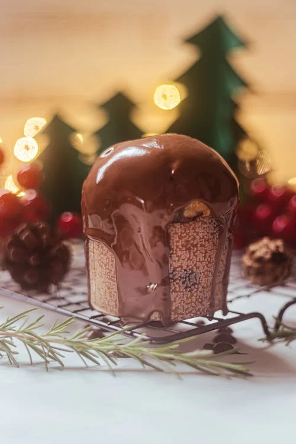

Originaire de Vénétie, le tiramisu est probablement LE dessert italien qui a conquis le monde. On parle ici de l’authentique tiramisu à l’italienne au café (même les autres déclinaisons sont excellentes aussi) Couches alternées de biscuits imbibés de café, une crème mascarpone légèrement sucrée, le tout saupoudré de cacao… C’est une explosion de saveurs en bouche. Chaque cuillerée de tiramisu italien est un délicat mélange de douceur et d’intensité. Tout ce que l’on aime dans la gastronomie italienne !
CannoliLes “cannoli” sont des tubes croustillants farcis de ricotta. Venus de Sicile, on les trouve le plus souvent à l’orange. Cette spécialité italienne sucrée était originellement préparée pour le carnaval, mais l’on en trouve désormais toute l’année (y compris dans votre épicerie-traiteur Mama Jolie).
Panna CottaEn italien, “panna cotta” veut dire “crème cuite”. Ce dessert italien d’origine piémontaise incarne la simplicité et l’élégance de la cuisine d’italie. Crémeuse et onctueuse, la panna cotta est souvent nappée d’un coulis de fruits rouges ou de caramel. C’est un incontournable dans tous les bons restaurants italiens !
PanettoneLe panettone est un dessert italien indissociable des fêtes de fin d’année ! Cette brioche, inventée à Milan, en Lombardie, est un symbole de partage et de célébration. Elle présente une mie aérée et parfumée, agrémentée de fruits confits et de zestes d’agrumes. C’est un dessert festif, qui reflète parfaitement la culture italienne pendant les fêtes.
 CassataLa cassata est un dessert sicilien et surtout une explosion de couleurs et de goûts. Ce gâteau riche, composé de génoise, de ricotta sucrée, de fruits confits et recouvert de pâte d’amande, est un véritable festival pour les sens. Sa présentation colorée et son goût délicat en font une conclusion parfaite pour tout repas italien.